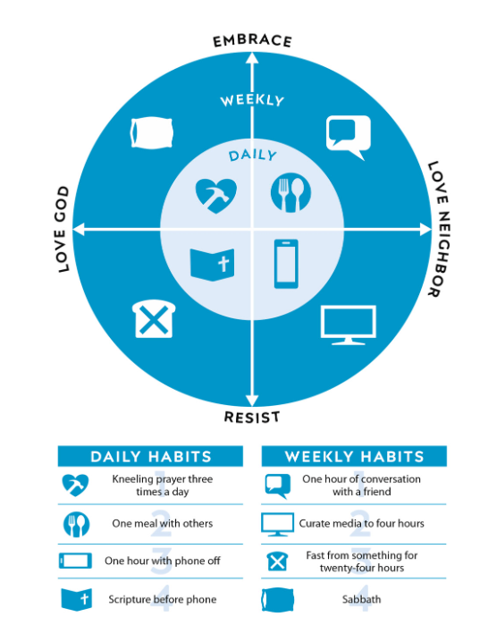

Central argument
Habits are not neutral: every daily rhythm either forms or deforms us. A life oriented toward God doesn't come from good intentions, but from small, repeated, shared practices, chosen as a response to God's love, not to earn it.
Synthesis
- Formation, not self-help. The Common Rule is a rule of life: a trellis of habits that holds the life we want to grow. Its aim is love of God and neighbour, not productivity.
- Two spectrums. Every habit is either love of God or love of neighbour, and either embrace (receiving the good God made) or resistance (fighting the invisible habits of distraction, anxiety and envy).
- Limits are where freedom is found. Each habit is a limit: on the phone, on media, on food, on work. The limit is what makes room for presence, prayer, friendship and rest.
- Keystone habits. Small habits change the other habits: prayer in the morning, Scripture before phone, one conversation a week, one day of rest.
- The gospel under the habits. Habits come after love: "It is finished". Placed before love they become legalism, placed after love they become the gospel.
- Failure is the path. Nobody keeps the whole rule. Failure is not the enemy of formation but its liturgy: the goal is beauty, so you fall into grace and keep walking.
- Common. The rule is meant to be lived with others: at the table, with a friend, fasting and resting together.
The Habits

The Spectrum
- the first spectrum
- the love of God: habits that open our eyes to who God is, so we accept the love he freely offers and return "the gaze that has always been fixed on us."
- the love of neighbour: habits practiced with others and for their sake, not for self-improvement. Here "neighbor" means anyone who needs our love: family, friends, strangers, enemies.
- the second spectrum
- embrace: habits that receive the good of the world God made, training body and heart to love God as he really is and to turn toward our neighbour as we were made to do.
- resistance: habits that fight the invisible habits of fear, anger, anxiety and envy the world trains into us, so we don't learn "to love the very things that tear us apart." Their purpose is still love: they are "not supposed to shield you from the world but to turn you toward it."
Daily habits
Kneeling prayer three times a day (morning, midday, bedtime) (1) (3)
may your Kingdom come soon.
may your will be done on earth, as it is in Heaven.
Matthew 6:10
may the words of my mouth and the meditation of my heart
be pleasing to you, o Lord, my rock and my redeemer.
Psalm 19:14
Words mean a lot more than we think, so we can use them to frame our mindset and set the tone for the day.
Prayers in this sense are the way.
Two kind of prayers:
- one to set reality
- one to create what can be
Keystone habit
the first domino in the line: by changing that habit, we simultaneously change the other following habits.
Beginning the day praying is a powerful keystone habit.
How to
- dnd when you wake up and at night on your iphone.
- posture: pick and keep always the same position while praying. It's like setting a dnd mode for your brain, positioning is linked to that activity and that mental state.
- what to say: see devotional
morning prayer: important to set the tone for the day.
God, thank You for another day i did not earn.
You are so generous with me, even though i am still a sinner, still learning to talk to You every day.
please help me live this day doing something good, for others and for myself.
watch over the people i love, and give them health and happiness today.
keep teaching me to guard my mind,
to resist every impulse that pulls me away from You.
in Jesus' name, amen.midday prayer: important especially if you're at work, an environment that can easily affect your mental state. Work is also an area of life that can feed our ego or fuel feeling of unworthiness, leading us to want to feel important and loved, instead of working to serve others. Taking a moment at work to pray reframes our mindset.
God, in the middle of this working day, i stop for a moment and turn back to You.
You have carried me this far, even when i forgot You were there.
this place can easily unsettle my mind, and feed my ego in a negative way.
and when i fail here, it can make me feel worthless.
please reframe what i feel in this place: my worth does not come from my work, it comes from You.
remind me that i am not here to be seen, but to serve.
give me patience for what is left of this day.
bless the people i work with: those who lead me, those beside me, the partners and clients i serve. let me be kind to each of them.
thank You for this job, and please help me keep it.
watch over my family and my loved ones, wherever they are right now: keep them healthy, keep them happy, keep them close to You.
bring my thoughts back to You, whenever they wander toward what does not come from You.
in Jesus' name, amen.evening prayer: important for the concept of "letting go", giving up control to trust God's plan for your life both personal and professional, for the people around you in a broader sense of your close ones. The evening is when worries arise, don't let you sleep, and we pray to be able to confide in God with everything instead of falling into sin, easy distractions and cheap dopamine that corrupts our soul. It's easy to fall when you'r exhausted at the end of the day. It's also the moment for gratitude for whatever the plan of God has been through the day, both if it brought happiness or suffering.
God, thank You for walking with me through this day.
thank You for everything it brought, joy and suffering alike: both were part of Your plan.
You saw everything i did well, and everything i did wrong, and You still love me.
please forgive me for the moments i chose myself over You and over others.
help me to let go of what i cannot control: my life, my work, the people around me. i give it all back to You, and i trust Your plan.
when worries come in the dark and keep me awake, let me confide them to You instead of carrying them alone.
i am tired, and when i am tired i fall more easily: keep me from sin, from easy distractions, from the instant gratifications that corrupt my soul.
protect the people i love tonight, and everyone You have placed around me: give them health, and let them wake up happy.
let me rest in Your peace tonight, and wake up tomorrow a little closer to You.
in Jesus' name, amen.
The trellis of habit
Without structure our days can easily derail, away from out true values. Habits in a structure may seem like a cage, but it's instead the founding structure of the life we want to live.
The structure
→ it starts by framing our days in love
→ it continues by taking a moment to pause, and see if we're still on the right path
→ it ends with letting go, remembering to trust God's plan and pray for protection
One meal a day with others (2) (3)
Important because the very need to eat reveals:
- our dependence on God and creation (Genesis 2:9)
- our dependence on each other
To see food only as fuel disconnects it from its spiritual roots, stripping away all the gratitude for example that should go into every meal towards every single human being who worked to get it on our table, and of course towards God and the creation.
The communal aspect of it goes without saying, especially for me, as an Italian.
Tips:
- schedule time for meals, and don't rush them always alone and unprepared;
- don't work or do other things while eating. It's also a great opportunity to pause, slow down;
- try to make the place where you eat, the table, a sacred space: no phones there for example;
- make meals an occasion to bond with friends, even neighbours.
How we live together may be the greatest sermon we preach.
Christine D. Pohl, Living into Community: Cultivating Practices That Sustain Us, 2012
One hour a day with the phone off (2) (4)
Presence is at the heart of who we are, because presence is at the core of our relationship with God.
If we are lost in our smartphones we're not present, or our "presence" is just superficial.
Tips:
- don't look at your phone when you're in the presence of friends and family. Decide where you are. With them? No phone.
- Same for work or deep focus work. You can't be in two places at once, your mind can be either working or scrolling.
- Seek moments of silence even just for yourself: you can't be with God if you're surrounded by noise.
- The phone must have a place at home, and a place at work. It's not always in your hands, it's not always there. At home, make it the charging station, at work a specific stand away from the monitor.
Scripture before phone (1) (4)
I am not, in my natural state, nearly so much of a person as I like to believe: most of what I call “me” can be very easily explained. It is when I turn to Christ, when I give myself up to His Personality, that I first begin to have a real personality of my own.
C. S. Lewis, Mere Christianity, 1952
The only way to make sure your identity is really aligned with Christ and your values is to make sure to stay as much as possible away from distractions. That's why prioritizing reading the Scriptures helps.
Social media is a temptation as soon as you wake up, or before bed. But it's obvious that it's not the right way to either start or end your day. It fuels envy, vanity, and for sure it doesn't feed your values and identity.
"Lord, to whom would we go? You have the words that give eternal life."
John 6:68
Cultivating the habit of Scripture before phone means looking in the right place to ask who you are. You open the Bible, and you find you are with your dad. You find your name written on its pages. You find you are loved. Then you begin to reflect that love, just as you were made to.
Justin Whitmel Earley, The Common Rule: Habits of Purpose for an Age of Distraction, 2019
Tips:
- plans, the Bible App
- read the Bible, guide
Weekly habits
One hour of conversation with a friend (2) (3)
I no longer call you slaves, because a master doesn't confide in his slaves. now you are My friends, since I have told you everything My Father told Me.
John 15:15
Friendship is being known by someone and loved anyway.
We are made for it: God is a Trinity, a fellowship, so we are made in the image of fellowship.
The only "not good" in the creation story is man being alone (Genesis 2:18).
What turns a relationship into a friendship:
- vulnerability: telling the truth about who you are, fears and secrets included;
- time: being there, week after week.
Why conversation, and why face to face:
- shared interests are only the seed. Friendship grows when you share words: hopes, fears, what you wouldn't tell anyone else.
- Texting lets us curate a perfect version of ourselves. Face to face we can't edit, so we're truly known.
- The key question between friends: Is there anything you aren't telling me? Secrets grow in the dark, and honest conversation brings them to light.
Sin is crouching at the door (Genesis 4:7, 1 Peter 5:8): a secret that nobody knows grows into a monster from the inside. Together, by exposing it to the light, we beat back the darkness.
The darkness rages in us, but honest conversation is a practice of light.
Justin Whitmel Earley, The Common Rule: Habits of Purpose for an Age of Distraction, 2019
Friendships never feel urgent, so they're the first thing we sacrifice when life gets busy, and exactly what we need the most then. That's why the time has to be scheduled.
Good friendships are open, not exclusive: love isn't limited, and the circle grows by inviting others in.
Tips:
- set a standing meeting: same day, same time, every week. Missing it sometimes is the exception, not the rule;
- tell your secrets to someone you trust: it's the biggest catalyst for a deep friendship;
- prepare good questions to ask each other regularly;
- keep friendships open: invite new people into them.
Curate media to four hours a week (2) (4)
We become the stories we consume.
Stories—more than any ethics lecture or Sunday school lesson—shape our idea of what the good life is, where the world is going, and what it means to be human. They tell us what is beautiful, what is just, and how we should live with each other.
Justin Whitmel Earley, The Common Rule: Habits of Purpose for an Age of Distraction, 2019
We are made to live in a story: the gospel, which is at once tragedy, comedy and fairy tale.
Today stories don't wait on a shelf for us to pick them, they come at us:
the streaming story.
Audio and video, short or long, on every screen and every app, often with ulterior motives.
The medium is the message.
Marshall McLuhan, Understanding Media: The Extensions of Man, 1964
The way we watch matters as much as what we watch. If we don't choose our stories, someone who does not love us will choose them for us.
The four hours are arbitrary: the point is a limit that forces curation.
Limits are where freedom is found:
unlimited choice makes us choose badly, a limit makes us choose well.
Curate for:
- beauty: the eye is made to hunger for beauty as the stomach for food. Beauty moves truth from the head to the heart.
- Justice: stories that make us grieve how the world is broken, and love how it should be. Prefer long-form sources to short news made to outrage us and keep us coming back ("when everything is a crisis, nothing is"). Listen to diverse voices. Justice is not only something to do, but to love: love mercy (Micah 6:8).
- Community: stories should push us out of isolation, not into it. Watch with someone else: we choose better together.
Tips:
- start with a time audit: track your media for a week, then set a limit for the next one;
- keep a list of things worth watching, instead of "what's on" or what the app suggests;
- turn off auto-play;
- balance with great stories: novels and biographies that have stood the test of time;
- read your feed: what the app thinks you like says who you're becoming. Then add, cut, curate;
- no video apps on the phone: watch on a computer, in shared spaces. We curate worse in private.
Fast from something for 24 hours (1) (4)
Jesus says "when you fast", not "if" (Matthew 6:16).
We were made to feast: food existed before emptiness (Genesis 2:9). We feast because we are full, not to become full.
Feasting to fill the emptiness is not feasting; it is coping.
Justin Whitmel Earley, The Common Rule: Habits of Purpose for an Age of Distraction, 2019
After the fall we keep trying to eat our way to happiness: we eat to numb, to medicate, to avoid our problems. Fasting resists this, and makes us look to God for our fullness: people do not live by bread alone (Deuteronomy 8:3, Matthew 4:4).
Fasting reveals three things:
- who I really am: without food to dull my desires, I see my impatience, my anger, my weakness. To live without fasting is to live without knowing who I truly am.
- The world's need: my emptiness opens me to the emptiness and suffering of my neighbours. It's a practice of empathy.
- Christ: He emptied Himself, and He waits for us in the emptiness, not on the mountains of triumph.
The point is not the technicalities, but leaning into the lack.
It can be food, sugar, social media, anything that makes you feel the longing.
Replace the meals with prayer: the stomach stays empty, but the soul is filled. And the fast becomes service: not expecting to eat, but to serve others as they eat.
The world doesn't end in fasting, but in a feast: we fast because we long for the fullness to come.
Tips:
- pick something to fast from: all food, or sugar, meat, alcohol, caffeine, social media, TV;
- try sundown to sundown, breaking the fast together at the end;
- if it feels too much, start with a meal: skip one and replace it with prayer;
- fast with others: a group chat for encouragement and prayers, pray together at the start, break the fast together;
- replace every meal with prayer, or a walk and prayer: just skipping meals doesn't lead to prayer;
- one day, work toward longer fasts as an occasional practice.
Sabbath (1) (3)
God created for six days, then stopped: He rested because the work was finished (Genesis 2:2-3), and asks us to keep the seventh day holy (Exodus 20:8-11). We were made for this rhythm of focusing and finishing, then resting. Our bodies are not machines.
The sabbath reminds us that God is God and we are not: like Adam and Eve, we don't like our limits.
Our culture turned busyness into a status symbol: being always busy is a way to prove we're important. Even the days off get filled with hobbies, side hustles, "getting our life together".
If you don't choose to rest, reality will make you rest: sickness, injury, breakdown.
The soul needs more than a nap: it needs the rest of having nothing left to prove. We don't have to work our way to significance, because Jesus has already done the work: "It is finished" (John 19:30). God's rest still waits for us (Hebrews 4). Nothing to add, everything to receive: come to Me, all of you who are weary (Matthew 11:28-30).
You have made us for Yourself, O Lord, and our heart is restless until it rests in You.
Augustine of Hippo, Confessions
Resting is not just doing nothing, it's doing restful things: worship, a long meal with friends, a walk in creation, a book read for pleasure. Real rest takes real work.
What rests you depends on your work.
A man who works with his mind should sabbath with his hands, and a man who works with his hands should sabbath with his mind.
Abraham Joshua Heschel (attributed)
Sabbath makes us feel that we can't get it all done, and that's the point: it's the truth. The world doesn't depend on me, it depends on Christ.
Place habits before love, and you will be full of legalism, but place love before habits, and you will be full of the gospel.
Justin Whitmel Earley, The Common Rule: Habits of Purpose for an Age of Distraction, 2019
Tips:
- pick a 24-hour period (for example sundown Saturday to sundown Sunday) and tell the people who need to know;
- write down three things to do and three to avoid, and adjust as you go;
- prepare the day before: chores done, space in the house and in the mind;
- mark the beginning, for example by lighting a candle;
- sabbath with others: a regular shared meal, where everyone brings something and cleans up together;
- if needed, work a bit more on the other weekend day, so this one stays whole;
- use gentle away messages ("I will be away from my computer until…");
- try a month of sabbaths without screens, then decide what to bring back;
- in hard seasons (a newborn, a sick parent, a new job) keep the rhythm anyway: that's when you need it most.
Epilogue: failure and beauty
Failure is not the exception, it's where we live: nobody keeps all the habits.
Failure is not the enemy of formation; it is the liturgy of formation.
Justin Whitmel Earley, The Common Rule: Habits of Purpose for an Age of Distraction, 2019
Failure is the path; beauty is the destination. If the goal of the habits is self-help, failure destroys you. If the goal is beauty, failure makes it shine brighter: you get up and keep walking.
When I fail, do I fall into myself, or into grace?
The habit holds even when I don't feel like it: waking up as a "failure and a fraud", Earley reaches for the phone, but Scripture before phone stops him. One line cracks him open: the one thing I ask of the Lord (Psalm 27:4). Sin curves the heart inward, Scripture turns the eyes up to beauty.
Kintsugi: the Japanese art of repairing broken pottery with gold. The scars are the design. We are God's pots, with cracks inlaid with the gold of grace.
Great things are made of small, persistent actions and limits: a life of love is built out of ordinary days. The goal is not being a better me, but becoming one person, a whole life offered to God (Romans 12:1), letting Him transform me (Romans 12:2). Even when "when I want to do what is right, I inevitably do what is wrong" (Romans 7:21).
Like the woman who pours perfume on Jesus' feet, love loses itself enough to embarrass itself (Matthew 26:10-13): habits done for beauty, not for success.
Those are the kind of habits worth cultivating—little habits of love, not carried out for success, not carried out to prove who you are, but cultivated because of a longing to love God and neighbor.
Justin Whitmel Earley, The Common Rule: Habits of Purpose for an Age of Distraction, 2019
A prayer for those trying the Common Rule
Father in heaven, who made us, who came to find us, who is redeeming us, we praise you!
You took on the limitations of being human, that we might become the children of God.
May we see that our freedom comes only in service to you.So Lord bless our days.
May our prayers be good work, and may our work become good prayers.
May our tables be full, and may they draw our neighbors in.
May we embrace good limits with technology and discover the beauty of being present with each other.
May we frame our days in the love letter of the Scriptures.And Lord bless our week.
May our friendships be a fire around which all the lonely can gather.
May we choose stories that form us into people who seek beauty, who love justice, and who find each other.
May we discover in fasting that our emptiness is where we find your fullness.
May we sabbath in the soul rest of knowing that, in Jesus, "It is finished."Lord, give us strength for all of this. We love only because you first loved us. When we stumble on our failure, may we fall into your grace.
May our lives become lights in the darkness, so that all may see your beauty. Amen.Justin Whitmel Earley, The Common Rule: Habits of Purpose for an Age of Distraction, 2019